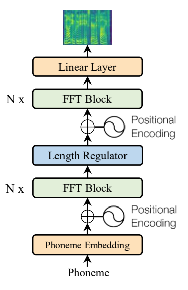
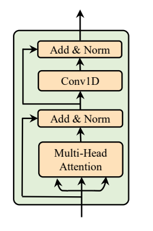
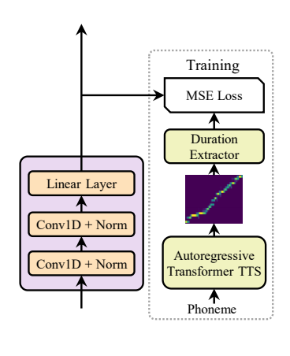

FastSpeech paper¶
背景¶
TTS的合成目前一般通过两个步骤生成：1. text(phoneme)转换成梅尔谱 2. 使用vocoder把梅尔谱转换成语音 Griffin-Lim, WaveNet, Parallel WaveNet, WaveGlow, WORLD, ClariNet 已有方法的问题： 1. 梅尔谱是自回归的，所以推理很慢 2. 生成的语音不够鲁棒（经由梅尔谱的级联，并且梅尔谱质量不够高，也会导致语音遗漏和重复） 3. 生成的语音控制性较差。
论文希望缓解以上三个问题，主要的贡献点： 1. 并行化生成梅尔谱 2. phoneme duration predictor实现phoneme和梅尔谱的对齐。对齐缓解了遗漏和重复问题 3. length predictor可以通过控制phoneme duration来实现韵律的控制
模型¶
解决思路¶
- TTS中遗漏与重复的原因是phoneme和梅尔谱对齐得较差，那就解决对齐问题：使用predictor来预测每个phoneme frame对应多少个梅尔谱frame。预测出之后对phoneme的hidden state根据预测结果做整数倍的复制。以上模块称为length regulator模块。
- Transformer结构中的全连接层与梅尔谱生成任务不是很匹配，因为梅尔谱生成更加依赖局部信息，因此提出FFT（Feed-Forward Transformer）,把全连接模块变成1D Conv模块。
- 对齐信息以及梅尔谱的来源：训练了一个自回归TTS作为teacher进行蒸馏。（其中对齐部分比较麻烦, 后面会详解介绍, 但是在fastspeech2中其实去除了这个teacher, 直接使用MFA工具对真实语音提取需要的对齐信息以及梅尔谱）
- 用自回归模型蒸馏非自回归模型实现并行加速
扩展¶
当有了length regulator模块后，可以通过调整对齐的结果，比如 1. 对对齐的倍数乘以系数实现生成速度的控制 2. 修改space的倍数实现韵律的控制
图示¶
整体结构¶

还对自回归TTS的sequence-level knowledge进行蒸馏。（蒸馏的目标是梅尔谱），其实没太理解这里的梅尔谱和直接抽取的有什么区别？对应的论文FFT block¶

length regulator¶
duration predictor¶

先训练一个TTS的自回归模型，使用transfromer模型(multihead attention). 然后在各个attention矩阵上衡量与对角阵（非方阵）的相似度（叫对角度更合适）。选择对角度最大的attention，进行变形argmax后得到duration predictor的监督信息。实验结果¶
评测维度设置为语音质量，推理速度，鲁棒性（对重复和遗漏的解决），可控性。
1. 语音质量¶
| Method | MOS |
|---|---|
| GT | 4.41 ± 0.08 |
| GT (Mel + WaveGlow) | 4.00 ± 0.09 |
| Tacotron 2 [22] (Mel + WaveGlow) | 3.86 ± 0.09 |
| Merlin [28] (WORLD) | 2.40 ± 0.13 |
| Transformer TTS [14] (Mel + WaveGlow) | 3.88 ± 0.09 |
| FastSpeech (Mel + WaveGlow) | 3.84 ± 0.08 |
结论 - Transformer TTS效果最好，但是是自回归生成的 - FastSpeech是非自回归方法，效果只降了一点点
2. 推理速度¶
| Method | Latency (s) | Speedup |
|---|---|---|
| Transformer TTS [14] (Mel) | 6.735 ± 3.969 | / |
| FastSpeech (Mel) | 0.025 ± 0.005 | 269.40× |
| Transformer TTS [14] (Mel + WaveGlow) | 6.895 ± 3.969 | / |
| FastSpeech (Mel + WaveGlow) | 0.180 ± 0.078 | 38.30× |
结论 - 无论是否加vocoder，推理速度都加快了很多
3. 鲁棒性¶
| Method | Repeats | Skips | Error Sentences | Error Rate |
|---|---|---|---|---|
| Tacotron 2 | 4 | 11 | 12 | 24% |
| Transformer TTS | 7 | 15 | 17 | 34% |
| FastSpeech | 0 | 0 | 0 | 0% |
结论 - 对遗漏和重复的问题解决非常好
4. 长度控制（不做详细介绍, 做法在模型中已经介绍过）¶
补充¶
消融实验 | System | CMOS | |--------------------------------------------|---------| | FastSpeech | 0 | | FastSpeech without 1D convolution in FFT block | -0.113 | | FastSpeech without sequence-level knowledge distillation | -0.325 |
结论 - 主要关注下1D Conv的提升，证明了在梅尔谱生成任务上，局部性确实更加适合用卷积来建模，相比于全连接